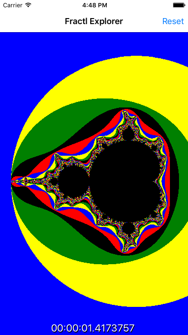

Duration
5 minutes
Goals
The primary goal of this lab is to explore an existing unresponsive application and examine the code that is preventing the UI thread from responding to user interactions.
Required assets
The provided Exercise 1 folder contains a sub-folder named Start which contains the project that we will examine. Please make sure you have this folder before you begin.
Steps
- Open the FractlExplorer.sln solution and run the application on one platform.
- Try dragging the fractal image on screen. Is it responsive? The Text at the bottom of the display shows the time taken to generate and display the fractal.
- If you're interested in exploring the fractal specific code, open the Utility folder in the FractlExplorer PCL project. We won't be modifying this code in this class.
- Open MainPage.xaml, the
ImageimageHost is used to display the fractal. Notice two gestures have been added to theImage. - Open MainPage.xaml.cs; this class is responsible for managing the fractal image generation. We'll be working primarily in this file.
- Scroll to
StartRender; this method is called by the gestures and itself calls theGenerateFractlmethod. - Scroll to
GenerateFractl; this method instantiates the Mandelbrot generator and copies the fractal data into the memoryBufferintarray field. - Scroll to
RefreshScreen; this method calls platform specific code to convert memoryBuffer to anImageSourcethat can be displayed in imageHost to display the fractal. - Notice that all of this code is currently being called synchronously. What parts of this code do you think are responsible for the long pauses during updates? We'll be modifying this code in the following exercises to improve both responsiveness and performance.
Summary
In this exercise you explored an application that does not respond to user interactions when updating.